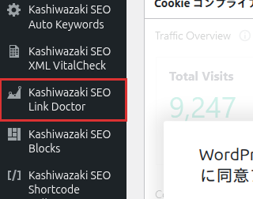

インストール・初期設定
プラグインのインストールから初期設定まで、ステップバイステップで解説します。
インストール手順
1
プラグインファイルを /wp-content/plugins/kashiwazaki-seo-link-doctor/ にアップロード
2
WordPress管理画面「プラグイン」から有効化
3
左メニューに「Kashiwazaki SEO Link Doctor」が追加される

有効化後、設定ページはなくすぐにリンクチェック機能を使用できます。管理画面のみで動作し、フロントエンドには一切出力しません。
管理画面の構成
管理画面はリンクチェック機能を中心に構成されています。
| メニュー | 説明 |
|---|---|
| リンクチェック | サイト全ページのアウトバウンドリンクをスキャン・検証 |
外部通信について
本プラグインはリンクのHTTPステータスを確認するため、外部サイトへのHTTPリクエストを送信します。
| 通信方法 | 用途 |
|---|---|
| wp_remote_get | リンク先のHTTPステータスコード取得 |
| cURL | wp_remote_getでは取得できないケースのフォールバック |
サーバーのファイアウォール設定で外部HTTPリクエストが制限されている場合、リンクチェックが正しく動作しないことがあります。サーバー管理者に確認してください。